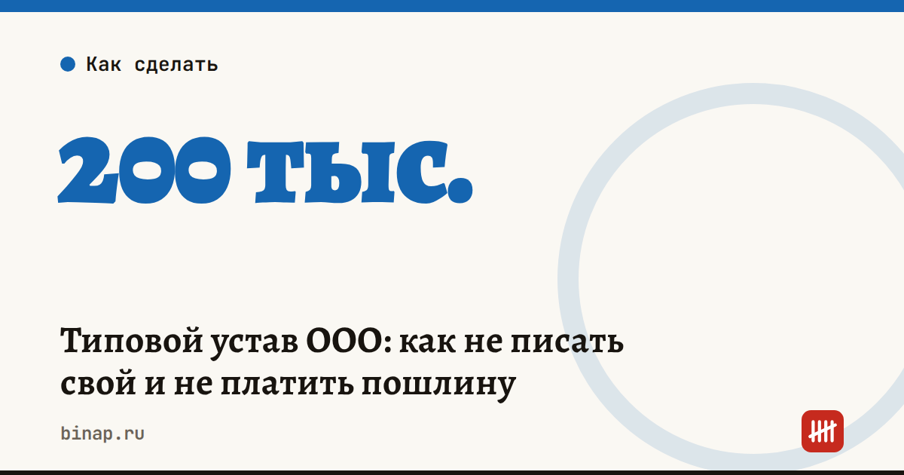

Типовой устав ООО: как не писать свой и не платить пошлину

Открывая ООО, свой устав писать не обязательно: в заявлении на регистрацию достаточно указать номер типового устава. Подавать сам устав и платить за него пошлину не нужно. По данным ФНС на 16 октября 2026 года, так уже работают больше 200 тысяч организаций.
Коротко
- В заявлении указывают, что общество действует на типовом уставе, и его номер.
- Текст устава в налоговую не подают.
- Пошлину за устав не платят.
- Подходит небольшим компаниям с обычной структурой управления.
- Особые правила — например, нестандартные полномочия органов или условия выхода участника — в типовой устав не добавить. Для них нужен свой.
Сроки, изменения и разборы для ИП и самозанятых — каждое утро в Telegram и MAX. Подпишитесь, чтобы не пропустить.
Кому подходит
- ООО с одним учредителем. Договариваться не с кем, типовой устав закрывает основные вопросы.
- ООО на двоих-троих без особых договорённостей. Экономите время на согласовании текста и юристе.
Когда нужен свой устав
- Учредители хотят особый порядок выхода участника или продажи доли.
- Нужны нестандартные полномочия директора или общего собрания.
- Есть договорённости, которые важно закрепить в учредительных документах, а не только «на словах».
Совет редакции: если учредителей двое и больше, проговорите эти вопросы до регистрации. После неё менять устав дольше, чем договориться заранее.
Что сделать
- Решите, нужны ли вам особые правила управления и выхода участника. Если нет — выбирайте типовой устав.
- В заявлении на регистрацию отметьте, что общество действует на типовом уставе, и укажите его номер.
- Если ООО уже работает на своём уставе без особых положений, менять ничего не нужно: типовой устав — это возможность, а не требование.
- После регистрации откройте расчётный счёт. Как сравнивать банки по своим оборотам — в статье где открыть счёт. Если думаете, ООО или ИП, — сравните с открытием ИП онлайн.
Частые вопросы
Нужно ли подавать типовой устав вместе с заявлением? Нет, достаточно указать его номер в заявлении.
Можно ли дописать в типовой устав свои пункты? Нет. Особые положения о полномочиях органов ООО или выходе участника требуют своего устава.
Нужна ли пошлина за регистрацию ООО на типовом уставе? За сам устав — нет.